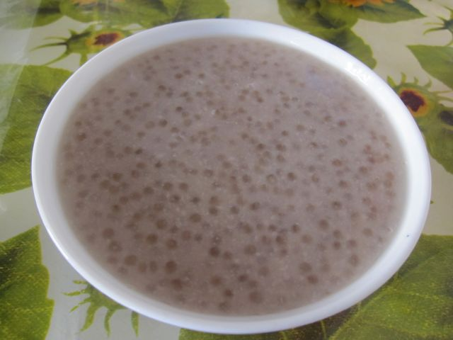

西米露是一個盛行於華人界，從小吃店到飯店均會出現的糖水，由於製作方便又美味，因此受人歡迎
一顆顆嬌小的西米露在碗中閃著晶瑩剔透的光澤，雖然口感和常見的粉圓類似，但說到夏日甜湯、冰品配料的首選
西米露是用「西谷米」煮成，因其外型狀似米粒故得其名。西谷米源自亞熱帶地區，是從「西古椰樹」的樹莖提煉而出的澱粉，將澱粉經過加工再煮熟就是所謂的西米露，
東南亞地區經常能夠看到西米露製成的甜點。
西米露和珍珠的成分同樣都是澱粉，只是因為來源、製作方式不同而有了不一樣的名字，吃起來的口感也不大相同